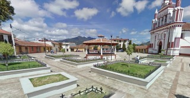
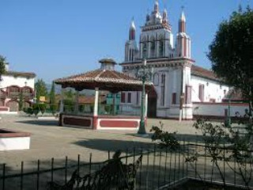
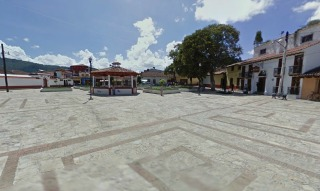
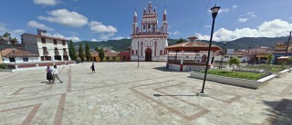
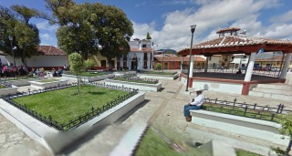

Fue construida en 1594. Cada año en esta plazuela se celebra el transito (la muerte física), la asunción (cuando fue llevada al cielo) y la coronación (como reina de todo lo creado) de la virgen maria.
Se encuentra ubicada en la Avenida 16 de Septiembre a la altura de la calle Real de Mexicanos.
Si usted se encuentra ubicado en la plaza de la paz viendo de frente hacia la catedral puede caminar hacia su izquierda pasando como referencia encontrará la Zapateria Catedral y Frente a este el Restaurant VIA VAI entre estos dos lugares encontrará el andador eclesiástico camine sobre el andador hasta llegar a la plazuela de Santo Domingo usted se encontrará muchos puestos de artesanías, continue caminando por la avenida 20 de noviembre 2 cuadras mas hasta llegar a la calle nicaragua de vuelta a la izquierda y camine una cuadra al llegar a la esquina de vuelta a su derecha y verá la feria de mexicanos.
En el lugar usted puede realizar actividades como:
* Fotografía
* Visita a museos
* Visita a iglesias
* Asistencia a eventos culturales
* Asistencia a eventos gastronómicos
* Asistencia a festivales de cine
* Asistencia a festivales de música
* Asistencia a festivales folklóricos
* Asistencia a fiesta popular





posicione el mouse sobre las imágenes